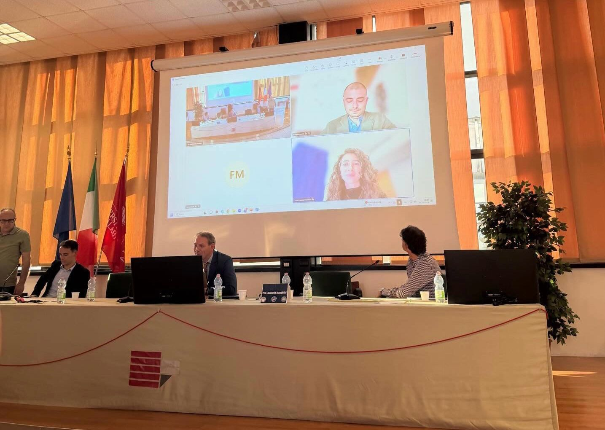

Invited seminar
Smart Hospitals: The Digital Revolution for a New Healthcare Paradigm in Calabria
Online · University of Calabria, Italy

I contributed remotely to the seminar “Smart Hospitals: The Digital Revolution for a New Healthcare Paradigm in Calabria” at the University of Calabria.
During the round table, we discussed the interaction between technological development, the private sector and local institutions, as well as the impact of professionals returning to the region — bringing back knowledge, experience and networks that can help build a smarter, more innovative ecosystem for Calabrian hospitals and healthcare.